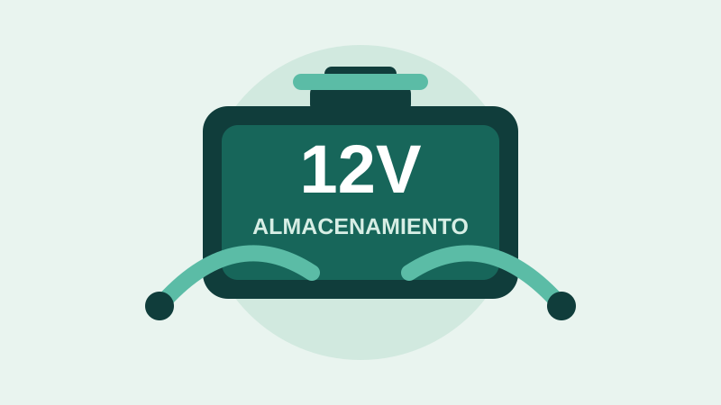

GENERACIÓN EÓLICA
Aerogenerador vertical 400 W
Turbina de eje vertical para generación eólica residencial. La ficha indica 400 W nominales, 450 W máximos y sistema de 12 V.
Precio de referenciaQ 2,967
Ver precio en tienda
Turbinas, aspas, controladores y equipos de medición para explorar la generación eléctrica a partir del viento.
Precios publicados en Yaxa Guatemala, consultados el 16/11/2026. Son referencias de terceros para equipos eólicos; algunos controladores también admiten sistemas solares. No son ofertas de WindForce y pueden cambiar. Confirma existencias, compatibilidad, costo total y garantía en cada tienda.
Turbina de eje vertical para generación eólica residencial. La ficha indica 400 W nominales, 450 W máximos y sistema de 12 V.

Paquete de seis motores pequeños para prototipos STEM y demostraciones de generación a escala educativa.

Conjunto listado con turbina eólica de 100 W, panel monocristalino de 100 W y controlador de carga.

Medidor portátil para consultar velocidad del viento y flujo de aire, útil para observaciones y pruebas de campo.

Turbina horizontal de 48 V para sistemas eólicos de mayor capacidad. La ficha indica 1,000 W nominales.

Juego de aspas y tuercas para ciertos aerogeneradores horizontales de 100 a 1,000 W. Verifica diámetro y compatibilidad con tu equipo.

Turbina horizontal de 12/24 V con tres aspas, para sistemas eólicos pequeños, embarcaciones y alumbrado aislado.

Controlador para sistemas que integran turbina eólica y solar, con regulación de carga y descarga PWM. La ficha declara una capacidad de hasta 9,000 W.

Aerogenerador de eje vertical con opciones de 24, 48, 96 o 120 V. La ficha consultada corresponde a la versión de 48 V y 3 kW.

Almacena la energía generada para utilizarla cuando el viento disminuye. Elige capacidad y voltaje compatibles con tu controlador e instalación.
Confirma compatibilidad, existencias y costo total directamente con cada tienda.